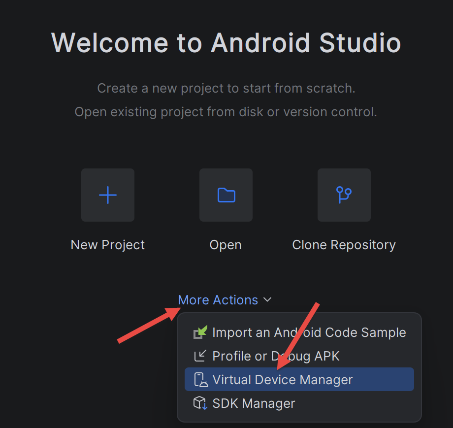
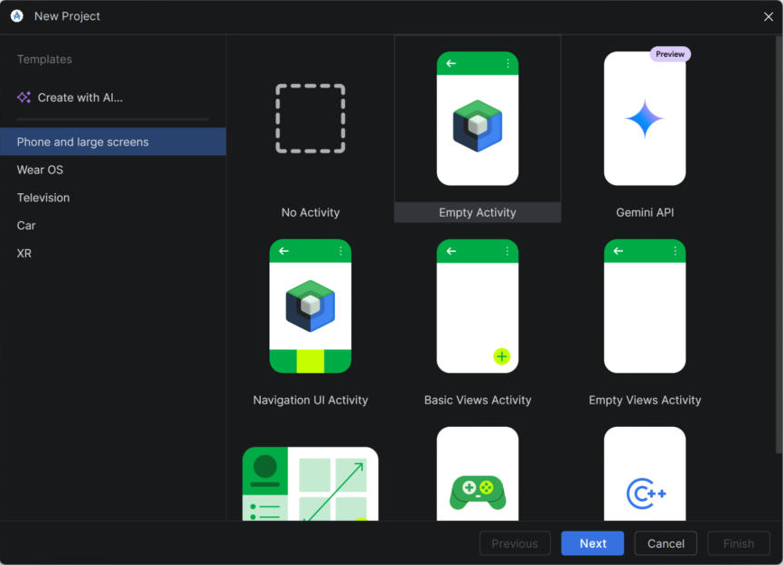
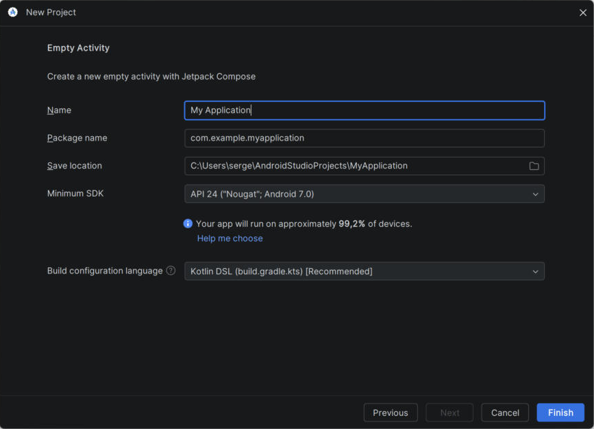

2. Chapter 1 - Setting Up the Work Environment
2.1. Installing the Tools
- Node.js: Download and install version 22 (or later) from nodejs.org. Verify the installation in a terminal using the commands [node --version] and [npm --version]. Node.js is only useful for the [NestJS] server.
- [MySQL] 8: It is installed in Chapter 2 using the Laragon tool, which also provides the administration tool HeidiSQL.
- Postman: Available for free download at postman.com; it is used to test the server in Chapter 2.
- Visual Studio Code: optional, for viewing the server code [NestJS].
For the client, only one tool is needed: [Android Studio]. It is not necessary to install a JDK (Java Development Kit) separately: Android Studio includes its own, the JetBrains Runtime ([JBR]), which is used to run [Gradle], the Android project build tool. The Kotlin compiler does not need to be installed either: it is a Gradle plugin that is automatically downloaded the first time the project is built.
2.1.1. Android Studio and SDK for Android
[Android Studio] can be downloaded for free at [https://developer.android.com/studio]. When you launch it for the first time, the wizard offers a standard installation: accept it. It will then download SDK Android (the platform libraries, compilation tools, and emulator).

This document has been tested with Android Studio Quail 4 (2026.1.4). The home screen provides access, via the link [More Actions], to [SDK Manager] and [Virtual Device Manager], which are used later on:

- [SDK Manager] installs and updates the components of SDK for Android. [SDK Platforms] tab: Verify that a recent Android platform is installed—the project in this document is compiled for API 37 (Android 17). If it is missing, Gradle will download it automatically during the first build;
- [SDK Tools] tab: Verify that [Android SDK Build-Tools], [Android SDK Platform-Tools] (which contains the [adb] tool), and [Android Emulator] are checked.

SDK is installed by default in the [%LOCALAPPDATA%\Android\Sdk] folder (on Windows). Two of its subfolders contain command-line tools used in this document: [platform-tools] (the [adb] tool, which controls a phone or emulator from the computer) and [emulator]. You can add these two folders to the system’s [PATH] so that you can simply type [adb] in a terminal.
2.2. Create an Android project with Android Studio
The client code is included with this document (folder [rdvmedecins-kotlin-client]). It was created from the Android Studio project template [Empty Activity] and then expanded upon. Let’s first look at how this starter project is created: it’s the equivalent of the [flutter create] command from the Flutter course. On the Android Studio home screen, click [New Project]:

- In the [Phone and large screens] category, select the [Empty Activity] template. This is the “Jetpack Compose” template: a single-screen app whose UI is defined in Kotlin. The [Empty Views Activity] template, on the other hand, uses the older view system described in XML, which this document does not use;
- click on [Next].

- [Name]: the application name, displayed beneath its icon on the phone. For this document: [RdvMedecins];
- [Package name]: the application’s unique identifier, in the form of a reverse domain name. For this document: [fr.rdvmedecins.client]. This is also the base Kotlin package for the source code;
- [Save location]: the project folder;
- [Minimum SDK]: the oldest supported version of Android. The client in this document requires API 26 (Android 8.0), which covers nearly all phones in use;
- [Build configuration language]: the language for Gradle configuration files. [Kotlin DSL (build.gradle.kts)] is the recommended choice: the build configuration is also written in Kotlin;
- [Finish] creates the project. Android Studio then initiates an initial “Gradle sync”: it downloads Gradle itself, the Android plugin, the Kotlin compiler, and the libraries declared by the project. This may take several minutes the first time.
The created project has the following directory structure (the files that the reader of this document has modified or added are discussed in Chapter 4):
[Gradle] plays the same role here that [npm] played for a Node.js project or that [flutter]/[pub] played for the Flutter project: it downloads the dependencies, compiles the code, and produces the installable application, an .apk file. The scripts [gradlew] (Linux, macOS) and [gradlew.bat] (Windows), the “wrapper ” Gradle, download the exact version of Gradle required by the project (specified in [gradle/wrapper/gradle-wrapper.properties]) as needed: no global installation of Gradle is required.
2.3. Open the client project
If you have downloaded the code from this document, the client is located in the [rdvmedecins-kotlin-client] folder. To open it: from the Android Studio home screen, click the [Open] button, then select that folder (the one containing [settings.gradle.kts]). Android Studio will start the Gradle synchronization described above. The project will then appear in the [Project] view (on the left); the [Android] view, which is the default, groups files by type (manifests, Kotlin+Java, assets, res) rather than by folder.
The project can also be built without opening Android Studio, using the command line. In a terminal opened in the [rdvmedecins-kotlin-client] folder:
- the first line (PowerShell) tells Gradle which JDK to use: the one from Android Studio. This is unnecessary if the [JAVA_HOME] variable is already defined on the machine;
- the second line runs the Gradle task [assembleDebug], which compiles the project and produces a “debug” app that can be installed on an emulator or a phone.
During the first build, Gradle downloads everything it needs and then displays the list of tasks it is running:
- [compileDebugKotlin]: compilation of Kotlin code into Java bytecode;
- [dexBuilderDebug]: conversion of this bytecode to the DEX format, the format executed by the Android virtual machine ([ART], Android Runtime);
- [packageDebug]: assembly of the [app/build/outputs/apk/debug/app-debug.apk] file, the installable application.
2.4. Set Up an Android Emulator
If you don’t have a phone, you can test the app on an Android emulator: a virtual phone that runs in a window on your computer. This section is the same as the one in the Flutter course.
[Prérequis]: Virtualization must be enabled in the computer’s [BIOS], and on Windows, the [Plateforme de l’hyperviseur Windows] feature must be checked ([Panneau de configuration / Programmes / Activer ou désactiver des fonctionnalités Windows]), which requires a restart. Otherwise, the emulator will not start or will run very slowly.
Open the [Device Manager] in Android Studio: [More Actions / Virtual Device Manager] from the home screen, or [Tools / Device Manager] when a project is open.

Click on [Create Device], select a template (for example, [Pixel 8]), then [Next]. Select a recent Android system image for the [x86_64] processor and download it using the [Download] link located next to it, then [Next] and [Finish].


Start the emulator using the [Play] button on the [Device Manager]:

You can also start it from a terminal. The first command lists the emulators that have been created; the second starts one of them:
Wait until the Android home screen appears in the emulator window (the first startup may take several minutes), then verify that the [adb] tool detects it:
[Remarque]: If [adb devices] displays [offline] instead of [device], the emulator has not finished starting up, or [adb] is in an inconsistent state. Wait for the welcome screen, then, if necessary, restart [adb] using the commands [adb kill-server] followed by [adb start-server]. If the problem persists, use [where.exe adb] to verify that no other [adb], of a different version (such as that of a previous SDK, for example), is present in the [PATH].
2.4.1. Preparing the Android Phone
To run the app on a real Android phone, the phone must be set to allow control from the computer:
- enable developer options: open [Paramètres / À propos du téléphone], then tap [Numéro de build] several times (usually 7) until the phone indicates that you are a developer. The exact labels vary by manufacturer;
- enable [Débogage USB] in the [Options pour les développeurs] menu (added in the previous step);
- Connect the phone to the computer using a USB cable that transfers data (not just charges the phone), and accept the USB debugging authorization request on the phone. On Windows, if the phone is not recognized, install the manufacturer’s driver USB (“OEM USB drivers,” see [https://developer.android.com/studio/run/oem-usb]);
- check that the phone appears in the list displayed by [adb devices].
The phone will access the [NestJS] server either via the computer’s IP address on the local network or via the USB cable using the [adb reverse] command: These settings are described in Chapter 5.